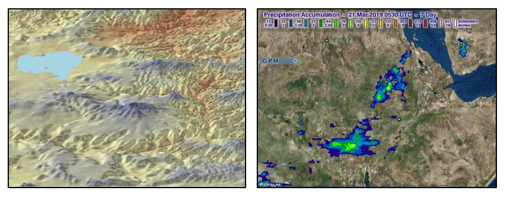
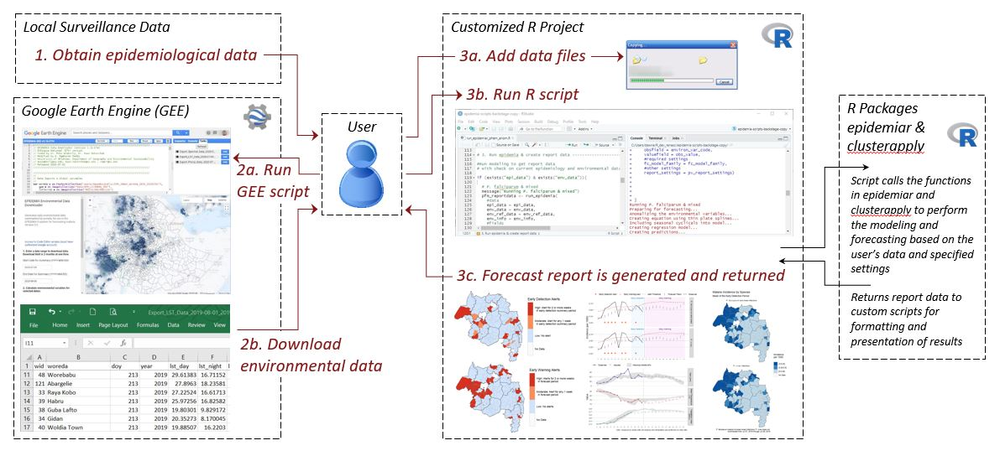

EPIDEMIA
Project Description
Outbreaks of malaria are often linked to climate variations and land use changes that affect the life cycles of the mosquito vector and the Plasmodium parasite. Early warning of the timing and locations of these epidemics can facilitate more effective targeting of resources for disease prevention, control, and treatment. We have developed the Epidemic Prognosis Incorporating Disease and Environmental Monitoring for Integrated Assessment (EPIDEMIA) system to support malaria forecasting in epidemic-prone regions of Ethiopia. EPIDEMIA uses machine-learning techniques with malaria surveillance data and environmental data from Earth-observing satellites to determine the relationships between climate variations and malaria outbreaks. The system provides an open-source software toolbox for data harmonization, predictive analytics, and report generation implemented in the R language and software environment. Remotely sensed data are accessed through a Google Earth Engine application that supports cloud-based data processing and produces downloadable summaries for use with EPIDEMIA. The software is usable with existing public health surveillance databases and can be run on a variety of computer systems.

Examples of remotely-sensed environment data used in EPIDEMIA, including MODIS land surface temperature (left), and rainfall data from the Global Precipitation Mission (Right).
The first step in implementing EPIDEMIA is to acquire historical epidemiological and environmental data for the region of interest and develop a harmonized dataset for modeling. These data are then used to identify geographic strata for modeling and calibrate the predictive models. To generate weekly forecasts, the system is updated with recent data, model predictions are generated for the upcoming twelve weeks, and the results are used to generate a formatted report with maps and charts. Forecasting is fully automated, and the necessary data processing, modeling, and report generation steps are carried out by running a single script. A separate validation module can be used to generate retrospective forecasts and evaluate their predictive skill using historical data.

Flowchart of the EPIDEMIA system illustrating the steps for generating a weekly forecast.
EPIDEMIA 1.0 was developed by an interdisciplinary team that includes scientists from the University of Oklahoma, along with collaborators from Ethiopian public health agencies, non-governmental organizations, and universities. The system was piloted and tested through a demonstration project in the Amhara region of Ethiopia. We worked with the United States Agency for International Development and the U.S. President’s Malaria Initiative to develop a roadmap for scaling up malaria early warning with EPIDEMIA to a national level. This work evaluated national-level malaria surveillance datasets, and engaged with a variety of stakeholders in Ethiopia. This page provides links to project outputs, including software code, documentation, and data.
We are currently working on a NASA-supported project to develop an updated version of the software that will provide substantial upgrades. The main objectives of this work are to improve the user interface to streamline modeling and provide interactive visualization for decision support, integrate new sources of environmental data from satellite Earth observations, incorporate novel predictive AI approaches for outbreak detection and forecasting, and expand the scope to include additional climate sensitive diseases besides malaria. For more information visit the EPIDEMIA 2.0 page.
EPIDEMIA: Software and Data
epidemiar-demo - Example implementation of EPIDEMIA for malaria forecasting in Ethiopia
R packages for disease modeling, forecasting, and early detection
- epidemiar GitHub archive: functions for malaria modeling, forecasting, validation, and early detection & early warning alerts.
- clusterapply GitHub archive: functions for implementing malaria forecasting models across multiple geographic strata.
Google Earth Engine (GEE) applications for accessing remotely-sensed data
Partner Organizations
Funding Sources
- NIAID (R01AI079411)
- USAID (AID-OAA-TO-14-00044 SUB-778)
- NASA (80NSSC25K0352)
Publications
- Wimberly, M. C., D. M. Nekorchuk, and R. R. Kankanala. 2022. Cloud-based applications for accessing satellite Earth observations to support malaria early warning. Scientific Data 9: 208.
- McMahon, A., A. Mihretie, A. A. Ahmed, M. Lake, W. Awoke, and M. C. Wimberly. 2021. Remote sensing of environmental risk factors for malaria in different geographic contexts. International Journal of Health Geographics 20: 28.
- Nekorchuk, D. M., T. Gebrehiwot, M. Lake, W. Awoke, A. Mihretie, and M. C. Wimberly. 2021. Comparing malaria early detection methods in a declining transmission setting in northwestern Ethiopia. BMC Public Health 21: 788.
- Wimberly, M. C., and D. M. Nekorchuk. 2021. Malaria Early Warning in Ethiopia: A Roadmap for Scaling to the National Level. U.S. Agency for International Development.
- Davis, J. K., Gebrehiwot, T., Worku. M., Awoke, W., Mihretie, A., Nekorchuk, D., and M. C. Wimberly. 2019. A genetic algorithm for identifying spatially-varying environmental drivers in a malaria time series model. Environmental Modelling and Software 119: 275-284.
- Merkord, C. L., Y. Liu, A. Mihretie, T. Gebrehiwot, W. Awoke, E. Bayabil, G. M. Henebry, G. T. Kassa, M. Lake, and M. C. Wimberly. 2017. Integrating malaria surveillance with climate data for outbreak detection and forecasting: the EPIDEMIA system. Malaria Journal 16:89.
- Wimberly, M. C., T. Gebrehiwot, M. Bishaw, W. Yalew, and A. Mihretie. 2016. EPIDEMIA: Integrating climate information and disease surveillance for malaria epidemic forecasting in Ethiopia. Pages 110-113 In: J. Shumake-Guillemot and L. Fernandez-Montoya, editors. Climate Services for Health: Improving Public Health Decision-Making in a New Climate. World Health Organization/World Meteorological Organization. Geneva, Switzerland.
- Liu, Y., J. Hu, I. Snell-Feikema, M. S. VanBemmel, A. Lamsal, M. C. Wimberly. 2015. Software to facilitate remote sensing data access for disease early warning systems. Environmental Modelling and Software 74: 238-246.
- Midekisa A., B. Beyene, A. Mihretie, E. Bayabil, M. C. Wimberly. 2015. Seasonal associations of climatic drivers and malaria in the highlands of Ethiopia. Parasites & Vectors 8: 339.
- Midekisa, A., G. Senay, G. M. Henebry, P. Semuniguse, and M. C. Wimberly. 2012. Remote sensing-based time series models for malaria early warning in the highlands of Ethiopia. Malaria Journal 11: 165.